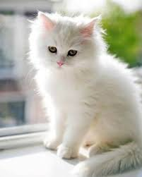
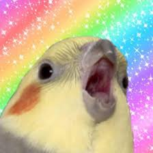
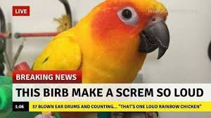
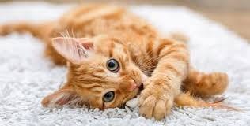

Here I will post some pictures. Be sure to check out my other website!!
That's a blue face.

This picture is a tortoiseshell cat. In other words, a calico cat.

I WILL END YOU birb picture. dont ask me how they got that
This is Whitestorm, a very honerable warrior cat of ThunderClan.

A good picture of some place that idk.
THREE FIRESTARS?!
Be respectful of him, its his birthday.
the cat and his girlfriend
this is just cute
this is Graystripe, but with blue eyes and a kit-Graykit.
This bird(birb)is extremely trained. See how he is lying on his owner's hand without biting him?

My mom and me :)
A birb screaming with a rainbow background. I dont know how they got THAT either.
This is my friend's cat XD
Snowkit? Is that you? Bluestar's sister? OH MY GOSH IT IS !!
Yep, i think the description is there already. XD
Wow, that's a lot of kits XD
This picture of the kit. Y'all know what a kit is, I hope.
"Wot in ternation," the birb said.
I know there's a copy of this picture... I just can't find it!
Firestar, the leader of ThunderClan, and the cat who saved the forest from BloodClan(Scourge)
this truly looks like Firestar, the cat who saved the forest from Scourge, and suprisingly he is. He is Rusty, Firestar's old self.
CATPLANE?
That's it! I hope you enjoyed veiwing this webpage, and sadly that's it for the time being. If u want more, check out the link at the top for my other website, or you can wait for more. (My next pictures will be in a visit to China to see my kin, but sadly COVID-19 is on the loose, so I cant enjoy my trip. Also, I only go to China in the summer, where there's no school for two months.)